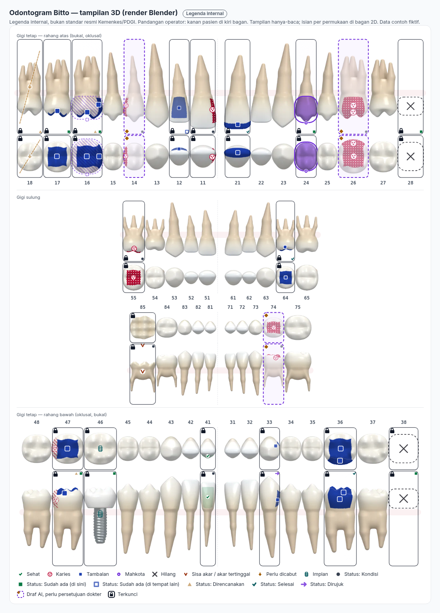
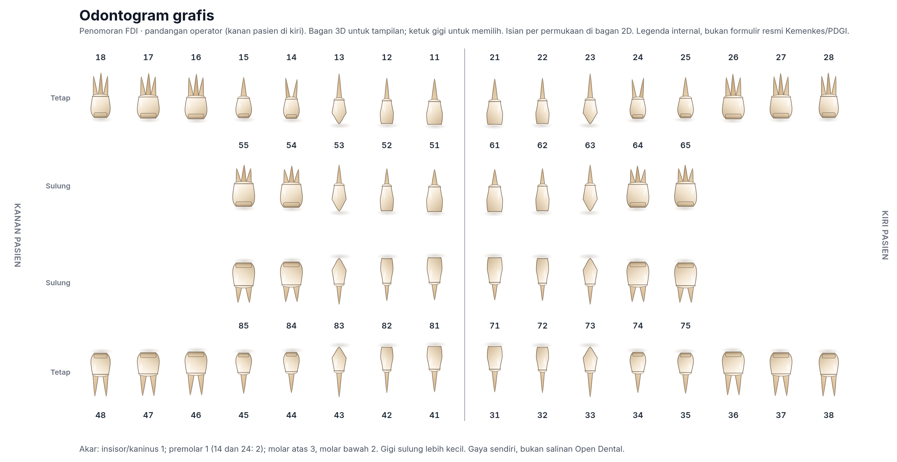

Permukaan, 9
Kariescar
Tambalan amalgamamf
Tambalan kompositcof
Tambalan GICgif
Sealantfis
Abrasiabr
Erosiero
Atrisiat
Frakturcfr
Sheet gigi memakai pola HeroUI v3 (drawer, tabs, chip, listbox, radio, tombol lg 48px, radius penuh, fokus 2px). Token Bittodent, teal hanya pada tombol primer. 33 kondisi dalam empat kelompok. Data sintetis. Lihat juga design/odontogram-kondisi.md.
Drawer bawah setia HeroUI: handle 48px, header, tab Permukaan, pencarian, Favorit dan terakhir di atas listbox, pad 56px, radio status, satu tombol Simpan. Karies pada M dan O, status Rencana.
Budi Santoso · kunjungan hari ini
Tab Seluruh gigi. Mahkota porselen (poc) dipilih, status Ada sebelumnya. Tidak ada pad permukaan. Kode ICD contoh tampil sebagai teks ringkas, bukan stepper.
Budi Santoso · kunjungan hari ini
ICD-10 Z97.2 · ICD-9-CM 23.41 (contoh).
Tab Rentang. Ketuk gigi di odontogram 2D untuk menandai abutment dan pontic. Rentang 34-36 tersorot, batang penghubung tampak. Status Rencana. Satu aksi Simpan.
Sari Nugroho · kunjungan hari ini
34 dan 36 abutment, 35 pontic. Ketuk gigi di bagan untuk ganti peran.
Semua kondisi per kelompok, plus baseline sehat dan empat status. Singkatan lazim (car, amf, poc, pon, dan seterusnya) sebagai kode tampilan. Desktop 1280.
33 kondisi + sehat. Tanda = warna dan bentuk, kontras non-teks minimal 3:1. Bukan formulir resmi PDGI. Permukaan: M O/I D B L.
2D tetap input utama di HP dan desktop. 3D memakai aset port yang sudah ada, untuk baca dan edukasi pasien. Jika gerakan dikurangi atau 3D gagal muat, bagan tetap 2D.
Budi Santoso · ketuk gigi untuk mencatat.
Mode Dokter: input hanya di 2D. Target gigi cukup besar untuk ketuk bersarung.
HP, toggle 2D. Input ketuk gigi, 48-56px.
Budi Santoso · tampilan baca.

HP, toggle 3D. Hanya baca, aset 3D yang sudah ada. Lazy, bukan input.
